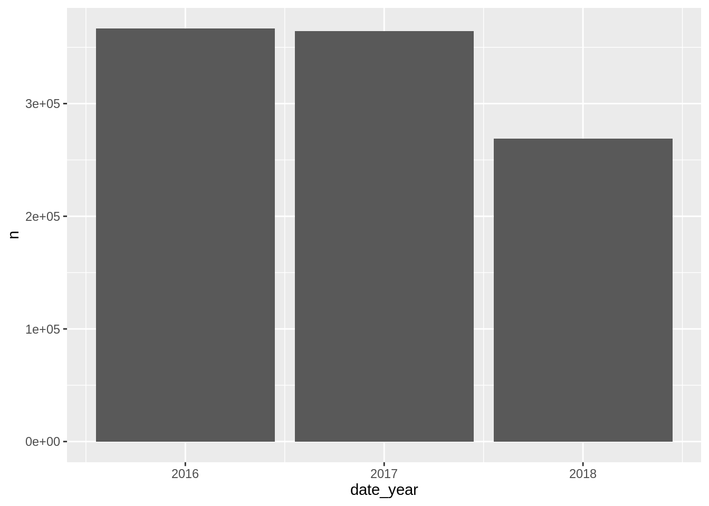
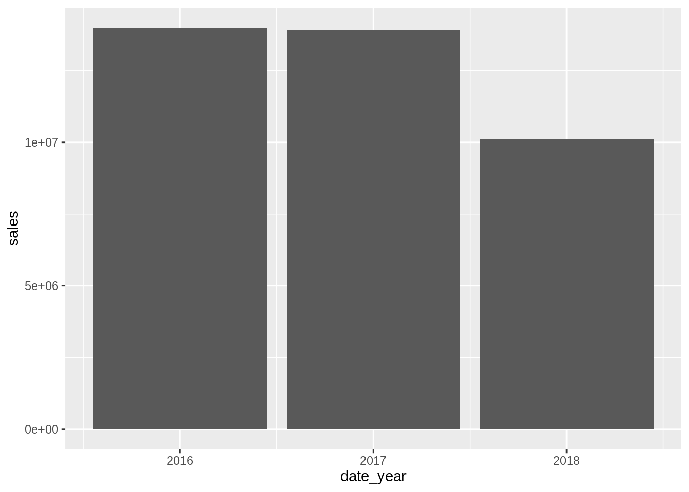
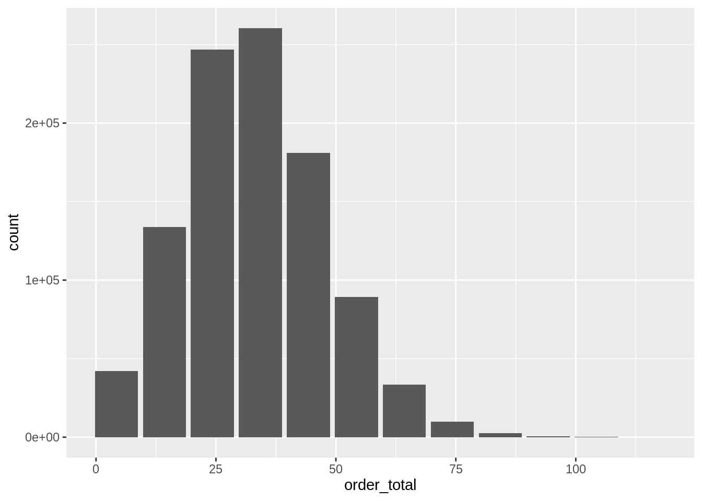
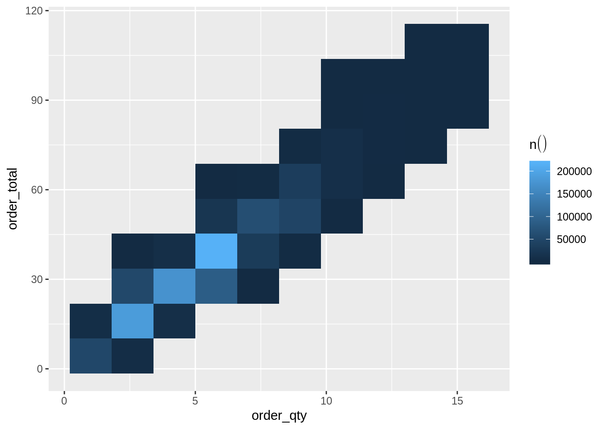

6 Data Visualizations
6.1 Simple plot
Practice pushing the calculations to the database
Load the
connections,dplyr,dbplyr, andconfiglibrariesUse
connection_open()to open a Database connectionUse
tbl()to create a pointer to the v_orders tableUse
collect()bring back the aggregated results into a “pass-through” variable calledby_yearPreview the
by_yearvariable## # A tibble: 3 x 2 ## date_year n ## <int> <int> ## 1 2017 364317 ## 2 2016 366796 ## 3 2018 268934Load the
ggplot2libraryPlot results using
ggplot2
Using the code in this section, create a single piped code set which also creates the plot
orders %>% count(date_year) %>% collect() %>% ggplot() + # < Don't forget to switch to `+` geom_col(aes(date_year, n))
6.2 Plot in one code segment
Practice going from dplyr to ggplot2 without using pass-through variable, great for EDA
Summarize the order totals in a new variable called
sales## Warning: Missing values are always removed in SQL. ## Use `SUM(x, na.rm = TRUE)` to silence this warning ## This warning is displayed only once per session.## # Source: lazy query [?? x 1] ## # Database: postgres [rstudio_admin@localhost:5432/postgres] ## sales ## <dbl> ## 1 38014100Summarize the order totals grouped by
date_yearin a new variable calledsales## # Source: lazy query [?? x 2] ## # Database: postgres [rstudio_admin@localhost:5432/postgres] ## date_year sales ## <int> <dbl> ## 1 2017 13911500 ## 2 2016 13998800 ## 3 2018 10103600Summarize the order totals grouped by
date_yearin a new variable calledsalesand plot the resultsorders %>% group_by(date_year) %>% summarise(sales = sum(order_total)) %>% ggplot() + geom_col(aes(date_year, sales))
Switch the calculation to reflect the average of the order sale total
orders %>% group_by(date_year) %>% summarise(sales = mean(order_total)) %>% ggplot() + geom_col(aes(date_year, sales))## Warning: Missing values are always removed in SQL. ## Use `mean(x, na.rm = TRUE)` to silence this warning ## This warning is displayed only once per session.
6.3 Create a histogram
Use the dbplot package to easily create a histogram
Load the
dbplotpackageUse the
dbplot_histogram()to build the histogram
Adjust the
binwidthto 10
6.4 Raster plot
Use dbplot’s raster graph
Use a
dbplot_raster()to visualizeorder_qtyversusorder_totalChange the plot’s resolution to 10

6.5 Using the compute functions
Use the
db_compute_raster()function to get the underlying results that feed the plotPreview the
locationsvariable## # A tibble: 58 x 5 ## customer_lon customer_lat `n()` customer_lon_2 customer_lat_2 ## <dbl> <dbl> <dbl> <dbl> <dbl> ## 1 -122. 37.8 10819 -122. 37.8 ## 2 -122. 37.7 22034 -122. 37.8 ## 3 -122. 37.8 10906 -122. 37.8 ## 4 -122. 37.8 11574 -122. 37.8 ## 5 -122. 37.8 33725 -122. 37.8 ## 6 -122. 37.8 20083 -122. 37.8 ## 7 -122. 37.7 11475 -122. 37.7 ## 8 -122. 37.7 23571 -122. 37.7 ## 9 -122. 37.8 11416 -122. 37.8 ## 10 -122. 37.8 11089 -122. 37.8 ## # … with 48 more rowsLoad the
leafletlibraryPipe
locationinto theleaflet()function, and then pipe that into theaddTiles()functionAdd the
addRectangles()function using the longitude and latitude variables
locations %>%
leaflet() %>%
addTiles() %>%
addRectangles(
~customer_lon,
~customer_lat,
~customer_lon_2,
~customer_lat_2
)- Add the
fillOpacityargument to theaddRectangles()step, usen()as the value for it
locations %>%
leaflet() %>%
addTiles() %>%
addRectangles(
~customer_lon,
~customer_lat,
~customer_lon_2,
~customer_lat_2,
fillOpacity = ~`n()`
)- Modify
fillOpacityto be calculated as a percentage against the maximum number of orders
locations %>%
leaflet() %>%
addTiles() %>%
addRectangles(
~customer_lon,
~customer_lat,
~customer_lon_2,
~customer_lat_2,
fillOpacity = ~(`n()` / max(`n()`))
)- Add the
popupargument with the following instruction as its value:~paste0("<p>No of orders: ",n(),"</p>")
locations %>%
leaflet() %>%
addTiles() %>%
addRectangles(
~customer_lon,
~customer_lat,
~customer_lon_2,
~customer_lat_2,
fillOpacity = ~(`n()` / max(`n()`)),
popup = ~paste0("<p>No of orders: ", `n()`,"</p>")
)Disconnect from the database using
connection_close